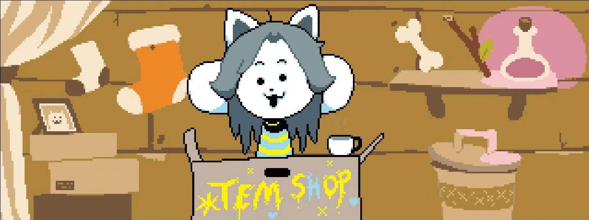

 |
| Sans |
|
角色介紹 |
| 中文翻譯 |
杉斯 |
| 初見之地 |
雪町森林 |
|
Papyrus (弟弟) |
| 關係 |
Toriel (朋友) |
|
Alphys (朋友) |
|
Undyne (上級) |
身為第三隻登場的主要人物，一登場時便會被他的氣勢給嚇得動彈不得(其實是惡作劇)，Sans一般情況與兄弟Papyrus為遊戲中的搞笑擔當，但在一些特殊情況下便會說出或做出一些令人後背發涼的事。Sans無論在哪條劇情線中都將在最終迴廊中審判玩家，在審判中Sans也會告訴主角何謂EXP及LV。在普通線及和平線中Sans都不會與我們戰鬥，只會審判罪過，但當玩家踏上了殺路線並走到這裡時，Sans便會因為玩家的不斷靠近而進入戰鬥，此時玩家也將面對來自地下世界最弱者(因為Sans只有1點攻擊和1點防禦力)兼最強者(忽視玩家無敵時間)的怒火